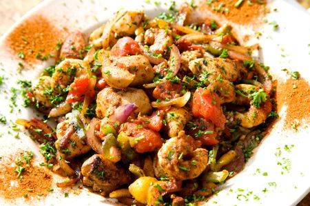
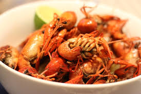
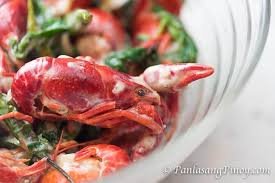
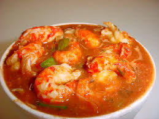
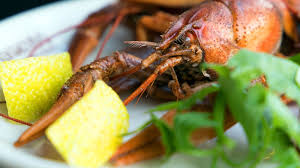
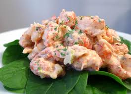
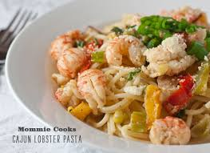

Ways to Eat Them: Boiled crawfish, fried crawfish, crawfish étouffée, crawfish beignets (and all of those things said like "crayfish" or "crawdads" or even "crawdaddies"; the preferred nomenclature is regional.)
Pros: If you like seafood, Old Bay, eating outside, corn, little potatoes, beer, socializing, pulling the heads off of animals, and personal challenges to eat 100 of something, maybe a crawfish boil is right up your alley!
Cons: Sometimes, yellow goo comes out with the meat.
The Best Fish Things That Are Not Really Fish.
      